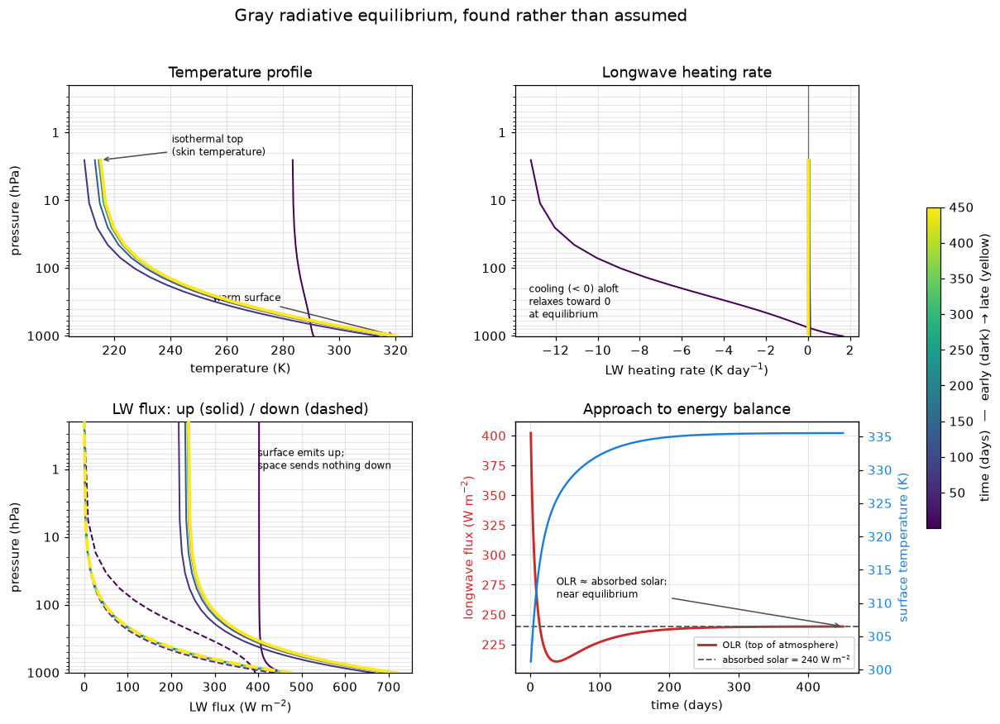

Stepping a column
Chapters 9 and 10 of the notes stop treating the atmosphere as something you solve and start treating it as something that evolves: a surface with a heat capacity, an atmosphere that heats and cools, and an equilibrium that is wherever the two stop changing.
Every page so far has been a snapshot. Page 4 wrote chapter 8’s gray equilibrium down, handed it to a radiation code, and checked that the heating rate vanished — which it did, to 0.002 K/day. That is a strong test, but the profile came from us. This page writes nothing down. It starts a column from climt’s default state, which is nobody’s equilibrium, steps it forward in time, and watches where it goes.
The column
One column of air, 28 levels, over a slab of water 2 m deep. Sunlight is prescribed rather than computed: 240 W m⁻² absorbed at the surface, written straight into the shortwave flux, because this tour runs no shortwave component. The atmosphere absorbs none of it. What the column has to do is get rid of 240 W m⁻² as longwave radiation to space, and it has two things it can change to do so — the surface temperature and the air temperature.
The longwave is page 4’s: the tour_gray_lw table at diffusivity_factor=2.0, calibrated so that the column’s diffusivity-scaled optical depth is τ_∞ = 4. Page 4’s “Which τ?” callout is why both settings matter.
That is the starting point: the air at 290 K all the way up, the surface at 300 K. It is not a guess at the answer. It is not even a plausible atmosphere — there is no reason for the air at 3 hPa to be as warm as the air at the ground — and that is the point. If the model gets from here to chapter 8’s profile, it found it.
Stepping it
Each step asks both components for their rates of change — the longwave heating of every layer, and the net flux into the slab — and an AdamsBashforth integrator turns those rates into a new state 12 hours later. Nine hundred steps is 450 simulated days. In a browser it takes about ten seconds.

This is the figure the cell above produces. Live cells need WebAssembly; if your browser blocks it, the static version is here.
Read the figure from the bottom right. The OLR starts far too high — a 300 K surface under an atmosphere at 290 K all the way up radiates about 400 W m⁻² — and falls fast, below 240 W m⁻², while the surface is still warming. That undershoot is the upper atmosphere cooling: the top of the column had no business being at 290 K and sheds its heat within weeks, while the slab, holding 2 m of water, takes months. Then the two meet, and OLR settles on the dashed line. The temperature panel says the same thing in profile. The first curve, half a day in, is still nearly the vertical 290 K line. By the next, two months on, the upper air has cooled past where it will end up, and the later curves climb back towards the yellow one as the warming surface catches up.
What it found
Now compare the last profile with chapter 8’s formula, evaluated on the same pressure levels by the same function page 4 used.
Every one of the 28 layers lands within 0.103 K of chapter 8’s profile, with an rms of 0.077 K. The surface settles at 335.53 K against the analytic 335.60 K. The OLR is 239.97 W m⁻², so the top of the atmosphere is out of balance by 0.03 W m⁻² — the budget, read off the state, not a curve squinted at.
That is the result this page exists for. Page 4 showed that the profile was an equilibrium. This shows it is the equilibrium — the place a column started somewhere arbitrary actually goes. The two claims are different, and the second is the one that makes the first worth having: an equilibrium nothing ever reaches is a curiosity.
Two features of the analytic solution arrive with it, unasked for. The top level sits at 215.06 K, 0.63 K above the skin temperature \(T_e/2^{1/4}\) = 214.43 K. That residual is real, and page 4 explained it: the top model layer is a finite slab of atmosphere centred at 2.6 hPa, not the τ* → 0 limit the skin temperature is defined at. And the ground sits 15.15 K above the air touching it — chapter 8’s discontinuity, which nothing in a purely radiative column can remove. Page 8 adds the process that does.
Page 4 met the TendencyComponent: called on a state, it returns a pair of tendencies and diagnostics, and changes nothing. Both components in this column are that kind.
A tendency is a rate. To advance anything, something has to multiply it by a timestep and add it on, and that something is a time integrator: sympl.AdamsBashforth(*components) takes a list of tendency components, sums their tendencies, and steps the state forward. It is third-order by default — it blends this step’s tendency with the two before it, which is why it keeps a memory between calls, and why its first two steps, having less history, are lower-order. Here is the whole loop the cell above ran; it lives in _tour/stepping.py, and every page from here on calls it.
There are two other kinds. A Stepper skips the rate altogether: called with a state and a timestep, it returns the new state directly. That suits a process whose answer is not naturally a rate — a boundary layer solved implicitly, or a convection scheme that snaps an unstable profile back to neutral — and pages 8 and 10 meet one each. That is what integrate’s second argument, empty here, is for: steppers run after the tendency update, in the order given.
The third is the ImplicitTendencyComponent, which returns tendencies but needs the timestep to compute them. Page 12’s moist convection scheme is one, and sympl warns when you put it inside AdamsBashforth. Page 12 explains the warning when you get there.
timedelta
UnytTimeDelta(hours=12), not Python’s datetime.timedelta(hours=12). They look interchangeable, and under this tour’s UnytBackend they are not:
The integrator computes T + (dT/dt) × Δt. The tendency carries units of K/s, and under UnytBackend those units take part in the arithmetic. A plain timedelta hands back 43200.0, a bare number, so the product is still in K/s, and adding K/s to K is — correctly — refused. UnytTimeDelta hands back 43200 s, the seconds cancel, and the sum is a temperature. The error is unyt doing its job, the same way it refused to add a temperature to a pressure on page 4.
Look at the loop again. Every step does two state.update calls, and their order matters:
diagnostics, new_state = model(state, timestep)
state.update(new_state) # 1. the new temperatures
state.update(diagnostics) # 2. then the fluxes the components computednew_state is not just the quantities that were integrated. It carries every quantity in the state forward, the longwave fluxes included, at their values from before the step. Apply the diagnostics first and new_state then overwrites the freshly computed fluxes with those carried-forward copies, so the fluxes in the state never catch up with the temperatures. SlabSurface reads the longwave fluxes at the ground to compute its tendency, so it heats the surface against stale radiation, and the surface runs away.
This is not hypothetical. It broke the demo this page replaces, and tests/test_modelling_tour.py now checks the fluxes survive the loop on both of this page’s tables. The last line of the loop, state["time"] += timestep, is the other thing an integrator does not do for you: it returns a new state, not a new clock.
The state has a specific_humidity, and climt’s default sets it to 0.0 at every level. For the gray column that is irrelevant: CorkLongwaveRadiation with the gray table does not take specific_humidity as an input at all, so nothing you do to humidity reaches it. Its optical depth depends on pressure, and on the CO₂ mole fraction it is scaled by — change that and τ_∞ changes with it — but not on water. You could saturate the column and get page 4’s profile back.
The fourteen-band table below does read humidity, and reads zero. So the non-grey column you are about to run is an atmosphere whose only greenhouse gas is CO₂. Hold on to that: it is why its surface comes out so cold, and it is exactly what makes the comparison on page 12, where the column supplies its own water vapour, worth drawing.
A different table, a different equilibrium
Now run the same loop with the fourteen-band Earth table that pages 1–3 used. This is not one string changed, and it matters to be exact about what is:
- the spectrum — fourteen bands of real CO₂ absorption instead of one gray band;
- the diffusivity factor — back to Cork’s default 1.66, the better approximation to the angular integral, since there is no analytic answer here to match;
- the total opacity — the gray table was calibrated to
τ_∞ = 4. The real table has whatever opacity 330 ppm of CO₂ and no water actually give, which is far less.
So the two columns below differ by all three at once, and the difference between them is not “what non-grey radiation does”. It is what a gray atmosphere tuned to τ_∞ = 4 and a dry CO₂-only atmosphere each do.
This cell takes about two and a half minutes in a browser — the same 900 steps, but each fourteen-band radiation call costs about 0.17 s in Pyodide against about 8 ms for the gray one (measured with the JIT off, the native stand-in for the browser). The spinner is expected.
The surface ends at 268.55 K — 67 K colder than the gray column’s — and the top level at 131.7 K, where the gray column’s was 215. Almost none of that is the spectrum as such. It is that a dry atmosphere with 330 ppm of CO₂ is nowhere near as opaque as τ_∞ = 4: most of the spectrum is window, the surface radiates through it, and it does not need to be hot to get rid of 240 W m⁻².
And this column has not finished. The OLR is 244.92 W m⁻², so the top of the atmosphere is still out of balance by −4.92 W m⁻² and the column is still cooling; the figure says so in its bottom-right annotation. Stepped on to 2300 steps (1150 days, about 6½ minutes in a browser — set N_STEPS = 2300 in this cell to reproduce it, or see scripts/experiments/tour_rce_measurements.py), it reaches a balance of −0.50 W m⁻² with the surface at 267.85 K, another 0.7 K down. Most of the remaining change is aloft: the top level goes on to 113.1 K. The upper layers of this column radiate only in the strong CO₂ bands, at very low pressure, and relax far more slowly than the surface does.
That top is also the qualitative difference the figure labels. The gray column finished in an isothermal layer at the skin temperature. This one keeps cooling all the way to the model lid, with no flat top at all. Its uppermost layers absorb only in the band centres, where the upwelling radiation reaching them was emitted by cold air not far below, and they emit in the same bands to space; there is no single skin temperature for a spectrum with no single optical depth.
The knob: mixed-layer depth
SLAB_DEPTHS below — the depth of the slab ocean, in metres of water. It sets the surface’s heat capacity, and nothing else.
Run the gray column twice, over a 1 m slab and a 5 m slab, for 700 days each (about 25 seconds in a browser), and plot the two surface temperatures on one axis.
The two curves end in the same place — 335.54 K and 335.49 K, both on chapter 8’s line — and take very different routes there. The 1 m slab is within a kelvin of its equilibrium by day 94; the 5 m slab takes until day 364.
This is the cleanest lesson on the page. The equilibrium is set by the balance between absorbed sunlight and outgoing longwave, and the heat capacity appears nowhere in that balance: at equilibrium nothing is warming, so how much energy it would take to warm is irrelevant. Heat capacity sets the response time — how long the imbalance has to act before it is gone. A deeper ocean is slower, not warmer.
It is also why the response times do not scale by five. The slab is not the only thing with a heat capacity: the air column has to warm too, and holding about as much heat per kelvin as 2.4 m of water, it adds a delay that deepening the slab does not change.
Exercises
Physics
A 10 m slab. Before you run it, predict: does a 10 m slab change the equilibrium surface temperature? Then set
SLAB_DEPTHS = (10.0,)and find out. Check the TOA imbalance the cell prints before you believe the answer — atN_KNOB = 1400it has not finished (still +3.0 W m⁻² out of balance); at 3000 steps it has (335.52 K, +0.05 W m⁻²).The e-folding time. Late in the run the surface approaches equilibrium exponentially. From
history["surface_temperature"](or the OLR, which gives the same answer), fitlog(T_final − T_s)against time over the part of the curve within a few kelvin of the end, and read off the e-folding time. For this page’s 2 m slab it comes out near 58 days.Now compare with the textbook estimate for a slab radiating as a blackbody,
ρ c_p h / (4σT³)— withh = 2m,ρ c_p ≈ 4.3 × 10⁶J m⁻³ K⁻¹ (read thesea_water_densityandsurface_thermal_capacityout of the state) andT = 335.5K. It gives about 12 days, five times too fast. Find the two reasons. (One: the surface does not radiate to space — atτ_∞ = 4most of what it emits is absorbed above it, so the OLR rises by far less than4σT³per kelvin of surface warming. Two: the slab is not the only reservoir. Estimate the air column’s heat capacity,c_p p_s / g, and compare.) Repeat the fit for the 1 m and 5 m runs and check that the e-folding time is roughly linear inhwith a nonzero intercept — and say what the intercept is.
Code
Break the timestep. Raise
DT_HOURSin the gray cell and re-run. 24 h is fine. From about 30 h the surface temperature starts flipping between two values on alternate steps — about 0.17 K apart at 30 h, 0.42 K at 36 h — which is the integrator, not the physics: look closely at the end of the time series, or printhistory["surface_temperature"][-4:]. At 60 h it fails outright, 36 steps in: the longwave component raises aValueErrorsaying its fluxes went non-finite and that the usual cause is a timestep past the stability limit. Read the message. It is there because the alternative, in a browser, is a blank figure and no error at all.The clock. Print
state["time"]in the first cell (it does) and again after the gray run. Confirm it advanced by exactlyN_STEPS × DT_HOURS— 450 days, from 2000-01-01 to 2001-03-26 — and then find the line instepping.integrateresponsible. Delete it in a copy of the loop, run ten steps, and see what the state thinks the time is.
Going deeper
What CorkLongwaveRadiation does inside each of those 900 calls — sweeping the column upward and downward, layer by layer, with the diffusivity factor standing in for the angular integral — is the two-stream solver, set out properly in the Radiative Transfer walkthrough.